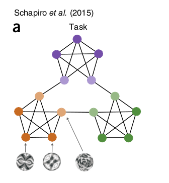
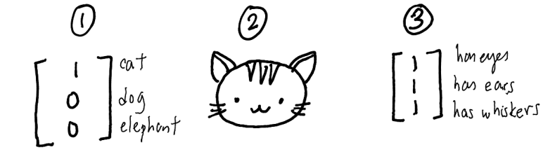
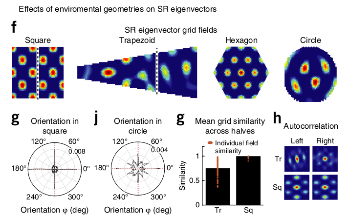

Stachenfeld et al. (2017). The hippocampus as a predictive map.
Momennejad et al. (2017). The successor representation in human reinforcement learning.
Geerts et al. (2020). A general model of hippocampal and dorsal striatal learning and decision making.
1 - Cognitive maps
Cognitive maps in the hippocampus
Cognitive maps (Tolman, 1948) denote the ability to extract relational knowledge about objects or places and use it to flexibly adapt behavior.
This relational knowledge can even be learned in the absence of rewards (implicit or latent learning).
Cognitive maps have been linked to the hippocampus in spatial navigation tasks (place cells), but also in non-spatial cognitive tasks.
transitive inference (A > B and B > C \(\rightarrow\) A > C)
temporal order, causality
social hierarchies
generalization
Abstract concepts can be represented in 1D or 2D maps, and neural firing in the hippocampal-entorhinal formation can be decoded accordingly.
Tolman, EC. Cognitive maps in rats and men. American Psychological Association; 1948.
O’Keefe, J, Nadel, L. The hippocampus as a cognitive map. Oxford: Clarendon Press; 1978.
Hippocampal zoo
Behrens, T. E. J., Muller, T. H., Whittington, J. C. R., Mark, S., Baram, A. B., Stachenfeld, K. L., et al. (2018). What Is a Cognitive Map? Organizing Knowledge for Flexible Behavior. Neuron 100, 490–509. doi:10.1016/j.neuron.2018.10.002.
Reinforcement learning in the basal ganglia
Reward-guided learning, reinforcement learning (RL) or operant conditioning rely mostly on the basal ganglia (BG), which learns to associate actions to expected rewards.
Dopamine (DA) released by VTA and SNC represents reward prediction error that drives learning in the BG:
Surprisingly good actions are reinforced, surprisingly bad ones are avoided.
The BG is structured in three main parallel (but communicating) loops with the cortex:
The limbic loop through the ventral striatum is involved in learning the motivational value of outcomes and their predictors.
The associative loop through the DMS learns to select plans towards an outcome and maintain the relevant information into the WM.
The sensorimotor loop through the DLS learns to select actions that lead to a particular outcome.
Two strategies are observed in navigational tasks, depending on familiarity:
Place strategy (allocentric) relies on a spatial cognitive map (place cells).
Response strategy (egocentric) relies on S-R associations.
The response strategy becomes dominant with overtraining, as it is computationally more efficient, but slower to build up.
The place strategy is hippocampus-dependent, while the response strategy is BG-dependent.
Geerts, J. P., Chersi, F., Stachenfeld, K. L., and Burgess, N. (2020). A general model of hippocampal and dorsal striatal learning and decision making. PNAS 117, 31427–31437. doi:10.1073/pnas.2007981117.
Goal-directed learning vs. habitual behavior
Goal-directed behavior learns R \(\rightarrow\) O associations.
“What should I do in order to obtain this outcome?”
Sensible to outcome revaluation.
Habits are developed by overtraining S \(\rightarrow\) R associations.
“I always do this in this situation.”
Not sensible to outcome revaluation.
Credits: Bernard W. Balleine
Two competing systems
There seems to be two competing systems for action control:
One cognitive and flexible system, actively planning the future.
One habitual system abstracting and caching future outcomes.
The open question is the arbitration mechanism between these two segregated processes: who takes control when?
Recent work suggests both systems are largely overlapping. See also Javier’s model.
Doll, B. B., Simon, D. A., and Daw, N. D. (2012). The ubiquity of model-based reinforcement learning. Current Opinion in Neurobiology 22, 1075–1081. doi:10.1016/j.conb.2012.08.003.
Miller, K., Ludvig, E. A., Pezzulo, G., and Shenhav, A. (2018). Re-aligning models of habitual and goal-directed decision-making, in Goal-Directed Decision Making : Computations and Neural Circuits, eds. A. Bornstein, R. W. Morris, and A. Shenhav (Academic Press)
2 - Reinforcement learning
Model-based vs. Model-free
Model-free methods use the reward prediction error (RPE) to update values:
where \(\mathbb{I}(s_{t})\) is 1 when the agent is in \(s_t\) at time \(t\), 0 otherwise.
The left part corresponds to the transition dynamics: which states will be visited by the policy, discounted by \(\gamma\).
The right part corresponds to the immediate reward in each visited state.
Couldn’t we learn the transition dynamics and the reward distribution separately in a model-free manner?
Dayan, P. (1993). Improving Generalization for Temporal Difference Learning: The Successor Representation. Neural Computation 5, 613–624. doi:10.1162/neco.1993.5.4.613.
Successor Representations (SR)
SR rewrites the value of a state into an expected discounted future state occupancy and an expected immediate reward by summing over all possible states \(s'\) of the MDP:
The underlying assumption is that the world dynamics are independent from the reward expectations.
Allows to re-use knowledge about world dynamics in other contexts (latent learning).
Not true, because the policy will visit more often the rewarding transitions, but good enough.
Dayan, P. (1993). Improving Generalization for Temporal Difference Learning: The Successor Representation. Neural Computation 5, 613–624. doi:10.1162/neco.1993.5.4.613.
Successor Representations (SR)
SR algorithms must estimate two quantities:
The expected immediate reward received after each state:
\[r(s) = \mathbb{E}_{\pi} [r_{t+1} | s_t = s]\]
The expected discounted future state occupancy (the SR itself):
The SR represents whether a state can be reached from the current state (b).
The SR depends on the policy:
A random agent will map the local neighborhood (c).
A goal-directed agent will have SR representations that follow the optimal path (d).
It is therefore different from the transition matrix, as it depends on behavior and rewards.
The exact dynamics are lost compared to MB: you only care whether a state is reachable, not how.
Russek, E. M., Momennejad, I., Botvinick, M. M., Gershman, S. J., and Daw, N. D. (2017). Predictive representations can link model-based reinforcement learning to model-free mechanisms. PLOS Computational Biology 13, e1005768. doi:10.1371/journal.pcbi.1005768.
Example of a SR matrix
The SR matrix reflects the proximity between states depending on the transitions and the policy.
It does not have to be a spatial relationship.

Stachenfeld, K. L., Botvinick, M. M., and Gershman, S. J. (2017). The hippocampus as a predictive map. Nature Neuroscience 20, 1643–1653. doi:10.1038/nn.4650
Learning the SR
How can we learn the SR matrix for all pairs of states?
\[
M^\pi = (I - \gamma \, \mathcal{P}^\pi)^{-1}
\]
This DP approach is called model-based SR (MB-SR) as it necessitates to know the environment dynamics.
Momennejad, I., Russek, E. M., Cheong, J. H., Botvinick, M. M., Daw, N. D., and Gershman, S. J. (2017). The successor representation in human reinforcement learning. Nature Human Behaviour 1, 680–692. doi:10.1038/s41562-017-0180-8.
Model-free SR
If we do not know the transition probabilities, we simply sample a single \(s_t, s_{t+1}\) transition:
This is SR-TD, using a SPE instead of RPE, which learns only from transitions but ignores rewards.
Momennejad, I., Russek, E. M., Cheong, J. H., Botvinick, M. M., Daw, N. D., and Gershman, S. J. (2017). The successor representation in human reinforcement learning. Nature Human Behaviour 1, 680–692. doi:10.1038/s41562-017-0180-8.
The sensory prediction error - SPE
The SPE has to be applied on ALL successor states \(s'\) after a transition \((s_t, s_{t+1})\):
Contrary to the RPE, the SPE is a vector of prediction errors, used to update one row of the SR matrix.
The SPE tells how surprising a transition \(s_t \rightarrow s_{t+1}\) is for the SR.
Stachenfeld, K. L., Botvinick, M. M., and Gershman, S. J. (2017). The hippocampus as a predictive map. Nature Neuroscience 20, 1643–1653. doi:10.1038/nn.4650
Successor representations
The SR matrix represents the expected discounted future state occupancy:
This critic can be used to train an actor\(\pi_\theta\) using regular TD learning.
Stachenfeld, K. L., Botvinick, M. M., and Gershman, S. J. (2017). The hippocampus as a predictive map. Nature Neuroscience 20, 1643–1653. doi:10.1038/nn.4650
Successor representation of actions
Note that it is straightforward to extend the idea of SR to state-action pairs:
depending on the choice of the next action \(a_{t+1}\) (on- or off-policy).
Russek, E. M., Momennejad, I., Botvinick, M. M., Gershman, S. J., and Daw, N. D. (2017). Predictive representations can link model-based reinforcement learning to model-free mechanisms. PLoS Computational Biology, 13, e1005768. doi:10.1371/journal.pcbi.1005768
Successor features
The SR matrix associates each state to all others (\(N\times N\) matrix):
curse of dimensionality.
only possible for discrete state spaces.
A better idea is to describe each state \(s\) by a feature vector \(\phi(s) = [\phi_i(s)]_{i=1}^d\) with less dimensions than the number of states.
This feature vector can be constructed or learned by an autoencoder (latent representation).

Stachenfeld, K. L., Botvinick, M. M., and Gershman, S. J. (2017). The hippocampus as a predictive map. Nature Neuroscience 20, 1643–1653. doi:10.1038/nn.4650
The successor feature representation (SFR) represents the discounted probability of observing a feature \(\phi_j\) after being in s.
Instead of predicting when the agent will see a cat after being in the current state \(s\), the SFR predicts when it will see eyes, ears or whiskers independently:
Gehring CA. 2015. Approximate Linear Successor Representation. Presented at the The multi-disciplinary conference on Reinforcement Learning and Decision Making (RLDM).
Successor features
The value of a state is now defined as the sum over successor features of their immediate reward discounted by the SFR:
Gehring CA. 2015. Approximate Linear Successor Representation. Presented at the The multi-disciplinary conference on Reinforcement Learning and Decision Making (RLDM).
Gehring CA. 2015. Approximate Linear Successor Representation. Presented at the The multi-disciplinary conference on Reinforcement Learning and Decision Making (RLDM).
Deep Successor Reinforcement Learning
Kulkarni, T. D., Saeedi, A., Gautam, S., and Gershman, S. J. (2016). Deep Successor Reinforcement Learning. arXiv:1606.02396
Visual Semantic Planning using Deep Successor Representations
Zhu Y, Gordon D, Kolve E, Fox D, Fei-Fei L, Gupta A, Mottaghi R, Farhadi A. (2017). Visual Semantic Planning using Deep Successor Representations. arXiv:170508080
3 - Neurobiological support for the SR hypothesis
The hippocampus as a predictive map
The main prediction of the SR hypothesis is that the hippocampus encode the SR.
In navigation tasks, each place cell does not encode the position of the rat relative to a preferred position:
\[
RF_i(x) = \exp^{- ||x - c_i ||^2}
\]
but rather the SR between the current position and the place field center:
Place fields are now behavior-dependent and reward-dependent: they predict where the rat can go.
Stachenfeld, K. L., Botvinick, M. M., and Gershman, S. J. (2017). The hippocampus as a predictive map. Nature Neuroscience 20, 1643–1653. doi:10.1038/nn.4650.
The hippocampus as a predictive map
The SR hypothesis explains how the place fields deform around walls or obstacles.
Stachenfeld, K. L., Botvinick, M. M., and Gershman, S. J. (2017). The hippocampus as a predictive map. Nature Neuroscience 20, 1643–1653. doi:10.1038/nn.4650.
The hippocampus as a predictive map
The SR hypothesis predicts how place fields skew around obstacles and depend on the direction of movement.
Stachenfeld, K. L., Botvinick, M. M., and Gershman, S. J. (2017). The hippocampus as a predictive map. Nature Neuroscience 20, 1643–1653. doi:10.1038/nn.4650.
Grid cells as eigenvectors of the place cells
Grid cells in the neotrhinal cortex are an eigendecomposition of the SR place cells, showing a spatially periodic structure.
The SR predicts correctly that the grids align with the environment boundaries and adapt to different shapes.

Stachenfeld, K. L., Botvinick, M. M., and Gershman, S. J. (2017). The hippocampus as a predictive map. Nature Neuroscience 20, 1643–1653. doi:10.1038/nn.4650.
A map of abstract relational knowledge in the human hippocampal–entorhinal cortex
Garvert, M. M., Dolan, R. J., and Behrens, T. E. (2017). A map of abstract relational knowledge in the human hippocampal–entorhinal cortex. eLife 6, e17086. doi:10.7554/eLife.17086.
A map of abstract relational knowledge in the human hippocampal–entorhinal cortex
Garvert, M. M., Dolan, R. J., and Behrens, T. E. (2017). A map of abstract relational knowledge in the human hippocampal–entorhinal cortex. eLife 6, e17086. doi:10.7554/eLife.17086.
A map of abstract relational knowledge in the human hippocampal–entorhinal cortex
Entorhinal representations follow the map structure of the latent learning task.
Representations are a weighted sum of future states, confirming the SR hypothesis.
Garvert, M. M., Dolan, R. J., and Behrens, T. E. (2017). A map of abstract relational knowledge in the human hippocampal–entorhinal cortex. eLife 6, e17086. doi:10.7554/eLife.17086.
The successor representation in human reinforcement learning
Human RL can be studied in simple two-step tasks and re-learning either the reward expectations or the transition probabilities.
Momennejad, I., Russek, E. M., Cheong, J. H., Botvinick, M. M., Daw, N. D., and Gershman, S. J. (2017). The successor representation in human reinforcement learning. Nature Human Behaviour 1, 680–692. doi:10.1038/s41562-017-0180-8.
The successor representation in human reinforcement learning
Human RL behavior is best explained by a linear combination of MB and SR processes.
Momennejad, I., Russek, E. M., Cheong, J. H., Botvinick, M. M., Daw, N. D., and Gershman, S. J. (2017). The successor representation in human reinforcement learning. Nature Human Behaviour 1, 680–692. doi:10.1038/s41562-017-0180-8.
Probabilistic Successor Representations with Kalman Temporal Differences
You can get rid of the hybrid SR mechanism if you add uncertainty estimation of state representations using Kalman filters.
Geerts, J. P., Stachenfeld, K. L., and Burgess, N. (2019). Probabilistic Successor Representations with Kalman Temporal Differences. 2019 Conference on Cognitive Computational Neuroscience. doi:10.32470/CCN.2019.1323-0.
A general model of hippocampal and dorsal striatal learning and decision making
Geerts, J. P., Chersi, F., Stachenfeld, K. L., and Burgess, N. (2020). A general model of hippocampal and dorsal striatal learning and decision making. PNAS 117, 31427–31437. doi:10.1073/pnas.2007981117.
A general model of hippocampal and dorsal striatal learning and decision making
Geerts, J. P., Chersi, F., Stachenfeld, K. L., and Burgess, N. (2020). A general model of hippocampal and dorsal striatal learning and decision making. PNAS 117, 31427–31437. doi:10.1073/pnas.2007981117.
A general model of hippocampal and dorsal striatal learning and decision making
Geerts, J. P., Chersi, F., Stachenfeld, K. L., and Burgess, N. (2020). A general model of hippocampal and dorsal striatal learning and decision making. PNAS 117, 31427–31437. doi:10.1073/pnas.2007981117.
A general model of hippocampal and dorsal striatal learning and decision making
Geerts, J. P., Chersi, F., Stachenfeld, K. L., and Burgess, N. (2020). A general model of hippocampal and dorsal striatal learning and decision making. PNAS 117, 31427–31437. doi:10.1073/pnas.2007981117.
Multi-scale successor representations
A critical parameter of SR is \(\gamma\), the discount rate determining how important are future states for the current state.
Having SR representations at different horizons allows to represent temporal relationships at different scales.
It can form the basis of hierarchical RL.
There is indeed a ventro-dorsal gradient of the size of the place fields in the hippocampus.
Momennejad, I. (2020). Learning Structures: Predictive Representations, Replay, and Generalization. Current Opinion in Behavioral Sciences 32, 155–166. doi:10.1016/j.cobeha.2020.02.017.
Multi-scale successor representations
It is furthermore possible to decode the distance to a goal based on multi-scale SR representations.
A neurally plausible linear operation, namely the inverse of the Laplace transform, can be used to compute the derivative of multi-scale SR and obtain an estimation of the distance to a goal.
Momennejad, I., and Howard, M. W. (2018). Predicting the future with multi-scale successor representations. bioRxiv, 449470. doi:10.1101/449470.
4 - Discussion
Successor representations and cognition
The SR can explain hippocampal activity in both spatial (place cells) and non-spatial cognitive tasks.
It realizes a trade-off between model-free and model-based learning, and can be combined with those two approaches to explain human reinforcement learning and spatial navigation strategies.
There is not yet a realistic neuro-computational model that uses successor representations (ongoing work with Simon Schaal).
Can VTA encode the SPE?
The SPE is a vector over all relevant task features.
VTA only responds to reward magnitude / probability, it is not feature-specific.
Some VTA neurons projecting to the tail of the striatum react for punishments (threat prediction error), but that is all.
Watabe-Uchida, M., and Uchida, N. (2019). Multiple Dopamine Systems: Weal and Woe of Dopamine. Cold Spring Harb Symp Quant Biol, 037648. doi:10.1101/sqb.2018.83.037648.
Feature-specific prediction errors and surprise across macaque fronto-striatal circuits
Oemisch, M., Westendorff, S., Azimi, M., Hassani, S. A., Ardid, S., Tiesinga, P., et al. (2019). Feature-specific prediction errors and surprise across macaque fronto-striatal circuits. Nature Communications 10, 176. doi:10.1038/s41467-018-08184-9.
Sharp Wave Ripples to access and learn the SR ?
Johnson, A., and Redish, A. D. (2007). Neural Ensembles in CA3 Transiently Encode Paths Forward of the Animal at a Decision Point. J. Neurosci. 27, 12176–12189. doi:10.1523/JNEUROSCI.3761-07.2007.